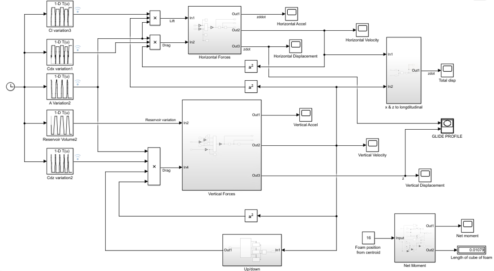
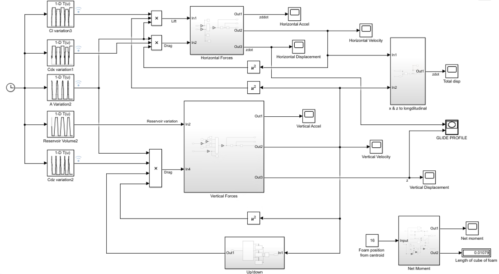

Since all the prototyping could not be fully complete due to lack of
resources, I moved my Final Year Project to a modelling task. The system
was modelled on Simulink with all the forces acting on the glider in
motion. First, the lift and drag forces on the glider were to be
determined from CFX results. The glider oriented at a range of angles
was modelled with laminar fluid flow. Using Bernouille's Equation
 rearranged, the Drag and lift coefficients for each pitch angle could be
calculated from the simulation results in the range of angles expected
in its transit (+/-35 deg to the longditudinal axis). The drag
coffecient was plotted against the pitch as shown. Using this, the CFD
simulation was run for the glider travelling at 0.25m/s.
rearranged, the Drag and lift coefficients for each pitch angle could be
calculated from the simulation results in the range of angles expected
in its transit (+/-35 deg to the longditudinal axis). The drag
coffecient was plotted against the pitch as shown. Using this, the CFD
simulation was run for the glider travelling at 0.25m/s.

These CFD results as well as other required parameters in the Bernouille Eq were then implemented as inputs into the Simulink model created to analyse the glider in motion. The model was set up with a vertical forces subsystem and a horizontal forces one.
 

First, for the vertical forces subsystem, the free body diagram shown
was assessed to obtain the governing equation which was expanded as
shown given the buoyancy and weight definitions. This was then directly
applied as the series of signals into the summation block in the
simulink model (3rd image- click to zoom). A rotating model with the
moments acting on the glider was also made to assess the glider rotation
in pitch.

There was a large set of valuable results obtained from the simulink
model. Overall the main ones found were that the glider was found to
reach a terminal velocity of approximately 0.1m/s at a pitch angle of
35deg at steady state. Varying the motor control would allow the
sawtooth profile of the glider to be controlled.